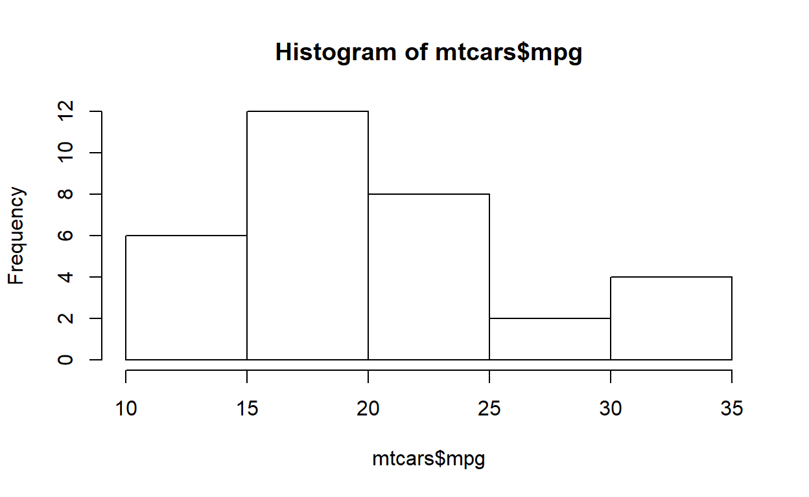

Yue Hu’s “Hello, R!” workshop series IV
Iowa Social Science Research Center (ISRC)
Preface
Fall 2018
- A overview of R
- Data manipulation (input/output, row/column selections, etc.)
- Quantitative Analysis
- Basic Data Visualization
Register other workshops in the ISRC website.
Data Glimpse
Toy data: gapminder data, demographic statistics popularized by Hans Rosling’s TED talks. Let’s have a check of data structure and sample observations.
glimpse(mtcars)Model
mpg_lm <- lm(mpg ~ cyl + hp + wt, data = mtcars)Tabulating
There are over twenty packages for table presentation in R. My favoriate three are stargazer, xtable, and texreg.
(Sorry, but all of them are for Latex output)
stargazer: good for summary table and regular regression resultstexreg: when some results can’t be presented bystargazer, trytexreg(e.g., MLM results.)xtable: the most extensively compatible package, but need more settings to get a pretty output, most of whichstargazerandtexregcan automatically do for you.
library(stargazer)
stargazer(mpg_lm, type = "text", align = T, header = FALSE)stargazer(mpg_lm, type = "text", align = T, header = FALSE,
title = "An Attracting Title",
dep.var.labels = "Miles/(US) gallon",
covariate.labels = c("Number of cylinders", "Gross horsepower", "Weight (1000 lbs)"),
notes = "Adding anything you want readers to notice, such as the source of data and so on.")Printing Publishable Table
stargazer(mpg_lm, type = "html", align = T)| Dependent variable: | |
| mpg | |
| cyl | -0.942* |
| (0.551) | |
| hp | -0.018 |
| (0.012) | |
| wt | -3.167*** |
| (0.741) | |
| Constant | 38.752*** |
| (1.787) | |
| Observations | 32 |
| R2 | 0.843 |
| Adjusted R2 | 0.826 |
| Residual Std. Error | 2.512 (df = 28) |
| F Statistic | 50.171*** (df = 3; 28) |
| Note: | p<0.1; p<0.05; p<0.01 |
- For Word users, click here.
Data Visualization
Well, numbers do not speak for themselves, how about…
R Plot Examples
Networks

Maps

Interactive plots

Too “fancy” ? Then…
Dot-whisker coefficient plot:

Or interaction plot:

R Visualization
- Basic plots:
plot(). - Lattice plots: e.g.,
ggplot(). - Interactive plots:
shiny(). (save for later)
Basic plot
Pro:
- Embedded in R
- Good tool for data exploration.
- Spatial analysis and 3-D plots.
Con:
- Not very pretty
- Not very flexible
Example
hist(mtcars$mpg)
Saving the output
- Compatible format:
.jpg,.png,.wmf,.pdf,.bmp, andpostscript. - Process:
- call the graphic device
- plot
- close the device
png("<working directory>/histgraph.png")
hist(mtcars$mpg)
dev.off()ggplot
- Built by Hadley Wickham based on Leland Wilkinson’s Grammar of Graphics.
- It breaks the plot into components as scales and layers—increase the flexibility.

- To use
ggplotfunction, one needs to install the packageggplot2first.
Example
ggplot(mtcars, aes(x=mpg)) +
geom_histogram(aes(y=..density..), binwidth=2, colour="black") ## A little decoration
ggplot(mtcars, aes(x=mpg)) +
geom_histogram(aes(y=..density..), binwidth=2, colour="black", fill="purple") +
geom_density(alpha=.2, fill="blue") + # Overlay with transparent density plot
theme_bw() + ggtitle("histogram with a Normal Curve") +
xlab("Miles Per Gallon") + ylab("Density")data: The data that you want to visualiseaes: Aesthetic mappings describing how variables in the data are mapped to aesthetic attributes- horizontal position (
x) - vertical position (
y) - colour
- size
- horizontal position (
geoms: Geometric objects that represent what you actually see on the plot- points
- lines
- polygons
- bars
theme: backgroundggtitle: plot captionxlab,ylab: axes labels- Other parts you may see in some developed template
stats: Statistics transformationsscales: relate the data to the aestheticcoord: a coordinate system that describes how data coordinates are mapped to the plane of the graphic.facet: a faceting specification describes how to break up the data into sets.
“Descriptive Statistics”
library(dplyr)
library(tidyr)
df_desc <- select(mtcars, am, carb, cyl, gear,vs) %>% # select the variables
gather(var, value) # reshape the wide data to long data
ggplot(data = df_desc, aes(x = as.factor(value))) + geom_bar() +
facet_wrap(~ var, scales = "free", ncol = 3) + xlab("")Saving the output
ggsave(<plot project>, "<name + type>"):- When the
<plot project>is omitted, R will save the last presented plot. - There are additional arguments which users can use to adjust the size, path, scale, etc.
- When the
saveThis <- ggplot(data = df_desc, aes(x = as.factor(value))) + geom_bar() +
facet_wrap(~ var, scales = "free", ncol = 3) + xlab("")
ggsave(saveThis)